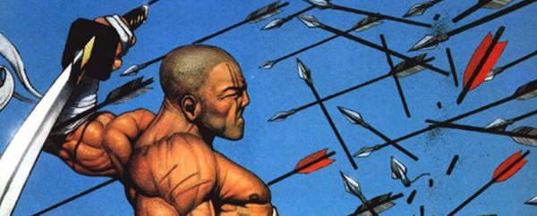

This Dreddworld tale focusses on the hi-tech crimes of Hondo City and introduces Judge-Inspector Shimura and Cadet Inaba. Shimura soon turns ronin in order to take on the yakuza without needing to negotiate deep-rooted departmental corruption. Inaba is brought in (but shamed in the process) to investigate. There's a desperate bleakness here, with the heroes up against organized crime, corrupt Judges and underworld demons. Even when they succeed, they seem also to lose.
Art by Jason Brashill
| Story Title | Parts | Pages | w indicates a wraparound coverCovers | Year(s) | Issues | Writer | Artist | Colourist | Letterer |
|---|---|---|---|---|---|---|---|---|---|
Linked to InabaShimura | 3 | 24 | 2.39: Frank Quitely 1 | 1993 | M2.37-2.39 | Robbie Morrison | Frank Quitely | <-- | Ellie de Ville |
Linked to InabaOutcast | 6 | 48 | 2.54: Colin MacNeil 1 | 1994 | M2.50-2.55 | Robbie Morrison | Colin MacNeil | [b&w] | Jon Beeston |
| Fearful Symmetry | 1 | 8 | 0 | 1995 | M2.72 | Robbie Morrison | Duke Mighten | Simon Fraser | Annie Parkhouse |
| Chambara | 1 | 8 | 0 | 1995 | M2.73 | Robbie Morrison | Robert McCallum | Simon Fraser | Annie Parkhouse |
| The Transcendental Assassin | 1 | 7 | Jason Brashill 1 | 1995 | M2.74 | Robbie Morrison | Simon Fraser | <-- | Annie Parkhouse |
Linked to InabaHeavy Metal | 1 | 7 | 0 | 1995 | M2.75 | Robbie Morrison | Duke Mighten | Simon Fraser | Annie Parkhouse |
| Assassins | 2 | 14 | 0 | 1995 | M2.76-2.77 | Robbie Morrison | Robert McCallum Ep.1 pages 1‑3 & 7 Ep.2 pages 1‑5 & 7 Simon Fraser Ep.1 pages 4‑6 Ep.2 page 6 various | Simon Fraser | Annie Parkhouse |
| Dragonfire | 4 | 56 | M3.16: Cliff Robinson 1 | 1996 | M3.14-3.17 | Robbie Morrison | Simon Fraser | <-- | Annie Parkhouse |
Linked to: The Angel Gang The Mean Machine Alternity.Angels of Death | 1 | 8 | 0 | 1996 | JDMS9 | Robbie Morrison | Lol | <-- | Gordon Robson |
From Judge DreddWeb | 1 | + 1 credit pages15 | Frank Quitely & Alan Craddock (C) 1 | 1996 | M3.19 | Robbie Morrison | Cyril Julien | Sean Barnes-Murphy | Tom Frame |
| Ronin Breed | 1 | 7 | 0 | 1997 | M3.34 | Robbie Morrison | Simon Fraser | <-- | Annie Parkhouse |
| Scary Monsters | 1 | 7 | 0 | 1997 | M3.35 | Robbie Morrison | Lol | <-- | Tom Frame |
Linked to: Inaba Judge Dredd Judge HersheyExecutioner | 3 | 24 | 0 | 2004 | M224-226 | Robbie Morrison | Andy Clarke | Gary Caldwell | Ellie de Ville |
Linked to InabaDeus X | 3 | 24 | 0 | 2005 | M228-230 | Robbie Morrison | Andy Clarke | Gary Caldwell | Ellie de Ville |
Linked to: Inaba Judge Dredd [Judge Giant, Jnr.] [Stan Lee]The Harder They Come | 6 | 48 | M241: Colin MacNeil 1 | 2005-2006 | M238-243 | Robbie Morrison | Colin MacNeil | [b&w] | Ellie de Ville |
Zombie Crossover EventHope Lies Buried | 1 | 8 | 0 | 2022 | M448 | Karl Stock | Kei Zama | Gary Caldwell | Jim Campbell |
| >> Teasers << | |||||||||
| Shimura | 2 | 2 | 0 | 1993 | M2.30, M2.34 | n/a | Frank Quitely | <-- | n/a |
| year | episodes | pages |
| 1991 | 0 | 0 |
| 1992 | 0 | 0 |
| 1993 | 3 | 24 |
| 1994 | 6 | 48 |
| 1995 | 6 | 44 |
| 1996 | 6 | 79 |
| 1997 | 2 | 14 |
| 1998 | 0 | 0 |
| 1999 | 0 | 0 |
| 2000 | 0 | 0 |
| 2001 | 0 | 0 |
| 2002 | 0 | 0 |
| 2003 | 0 | 0 |
| 2004 | 3 | 24 |
| 2005 | 6 | 48 |
| 2006 | 3 | 24 |
| 2007 | 0 | 0 |
| 2008 | 0 | 0 |
| 2009 | 0 | 0 |
| 2010 | 0 | 0 |
| 2011 | 0 | 0 |
| 2012 | 0 | 0 |
| 2013 | 0 | 0 |
| 2014 | 0 | 0 |
| 2015 | 0 | 0 |
| 2016 | 0 | 0 |
| 2017 | 0 | 0 |
| 2018 | 0 | 0 |
| 2019 | 0 | 0 |
| 2020 | 0 | 0 |
| 2021 | 0 | 0 |
| 2022 | 1 | 8 |
| 2023 | 0 | 0 |
| 2024 | 0 | 0 |
Comic strip data (excludes other content):